Son Dakika
Filistin’den bütün haberler, en yeniden eskiye · 50 haber · Son güncelleme 14 Ekim 2026, 15.00
14 Ekim 2026 Çarşamba
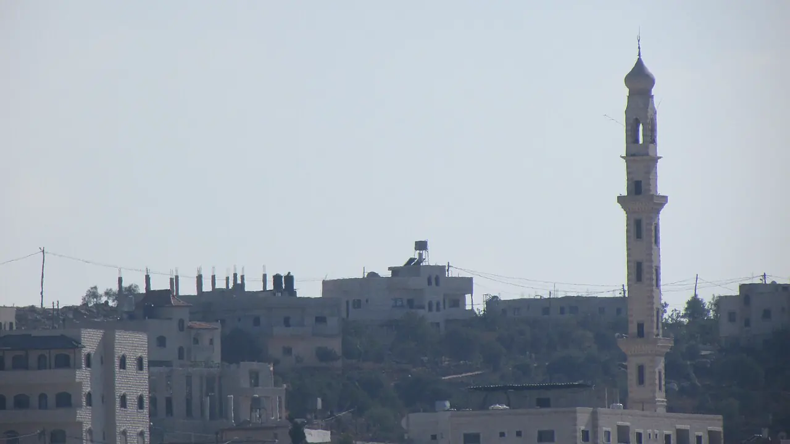
#BATI ŞERIAKomisyon: Batı Şeria’da 2023’ten bu yana camilere 23 kundaklama saldırısı belgelendiDuvar ve Yerleşim Karşıtı Komisyon, Ocak 2023’ten 11 Ekim 2026’ya kadar Filistin camilerini ve eklentilerini hedef alan 23 kundaklama ve kundaklama girişimi belgelediğini açıkladı; bunların 20’si yerleşimcilere, 3’ü İsrail ordusuna atfedildi. #TAMMUNİsrail güçleri Tammun’da bir evi saatlerce kuşattı, 90 yaşında bir adam ile bir kadını darbettiTubas’ın güneyindeki Tammun beldesine sabah saatlerinde sızan İsrail özel kuvvetleri bir evi kuşattı; bölgeye askeri takviye gönderildi, keşif uçakları bölge üzerinde uçuşunu sürdürdü.
#TAMMUNİsrail güçleri Tammun’da bir evi saatlerce kuşattı, 90 yaşında bir adam ile bir kadını darbettiTubas’ın güneyindeki Tammun beldesine sabah saatlerinde sızan İsrail özel kuvvetleri bir evi kuşattı; bölgeye askeri takviye gönderildi, keşif uçakları bölge üzerinde uçuşunu sürdürdü. #TULKEREM KAMPIİsrail güçleri Tulkerem Kampı’ndan 47 yaşındaki bir kadını Cebbare kontrol noktasında gözaltına aldıFilistinli Esirler Kulübü’nün Tulkerem şubesine göre İsrail güçleri, Tulkerem Kampı’nda yaşayan 47 yaşındaki bir kadını kentin güneyindeki Cebbare kontrol noktası yakınında gözaltına aldı.
#TULKEREM KAMPIİsrail güçleri Tulkerem Kampı’ndan 47 yaşındaki bir kadını Cebbare kontrol noktasında gözaltına aldıFilistinli Esirler Kulübü’nün Tulkerem şubesine göre İsrail güçleri, Tulkerem Kampı’nda yaşayan 47 yaşındaki bir kadını kentin güneyindeki Cebbare kontrol noktası yakınında gözaltına aldı. #HARISİsrail güçleri Selfit’in batısındaki Haris’te üç oto tamirhanesini yıktıYerel kaynaklara göre İsrail güçleri, Selfit’in batısındaki Haris köyünün trafik ışıkları yakınında iki kardeşe ait üç oto tamir ve kaporta dükkânını yıktı.
#HARISİsrail güçleri Selfit’in batısındaki Haris’te üç oto tamirhanesini yıktıYerel kaynaklara göre İsrail güçleri, Selfit’in batısındaki Haris köyünün trafik ışıkları yakınında iki kardeşe ait üç oto tamir ve kaporta dükkânını yıktı.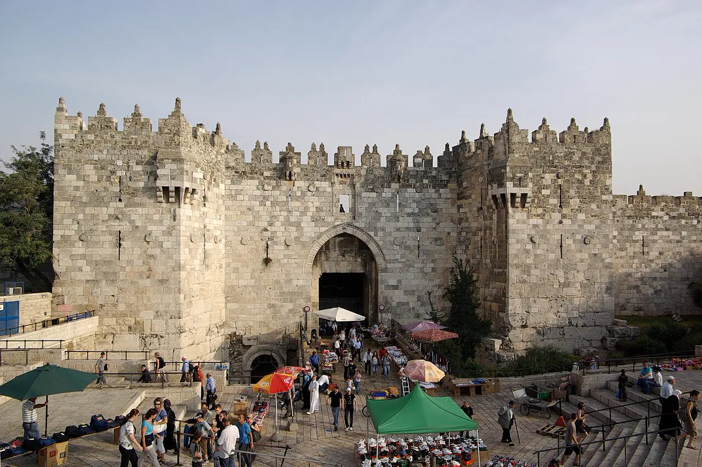
#KUDÜSFilistin, Kolombiya’nın Kudüs’te büyükelçilik açmasını kınadıFilistin Dışişleri ve Gurbetçiler Bakanlığı, Kolombiya’nın İsrail nezdindeki büyükelçiliğini Kudüs’te açmasının uluslararası hukuku ve BM Güvenlik Konseyi’nin 476 ile 478 sayılı kararlarını çiğnediğini açıkladı. #SELFITSelfit’te zeytin toplayan bir genç gözaltına alındı, Karavet Beni Hasan’da çiftçilere biber gazı sıkıldıYerel kaynaklara göre İsrail güçleri, Selfit kentinin kuzeyindeki arazisinde zeytin toplayan bir genci gözaltına aldı.
#SELFITSelfit’te zeytin toplayan bir genç gözaltına alındı, Karavet Beni Hasan’da çiftçilere biber gazı sıkıldıYerel kaynaklara göre İsrail güçleri, Selfit kentinin kuzeyindeki arazisinde zeytin toplayan bir genci gözaltına aldı.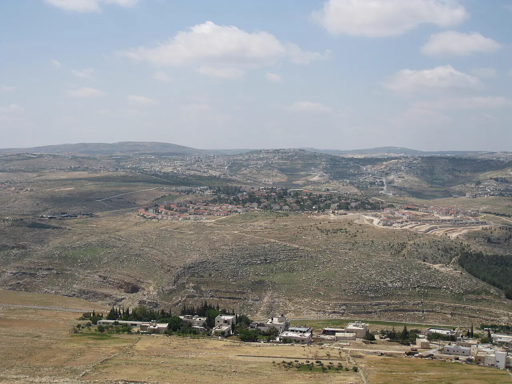
#TEKUAİsrail, Beytüllahim’in güneydoğusundaki Tekua’nın yedi girişini ikinci gün de kapalı tuttuTekua Belediye Başkanı’nın WAFA’ya verdiği bilgiye göre İsrail güçleri, beldenin yedi girişini demir kapılarla, diğer yolları toprak setlerle kapatmayı ikinci gününde de sürdürdü.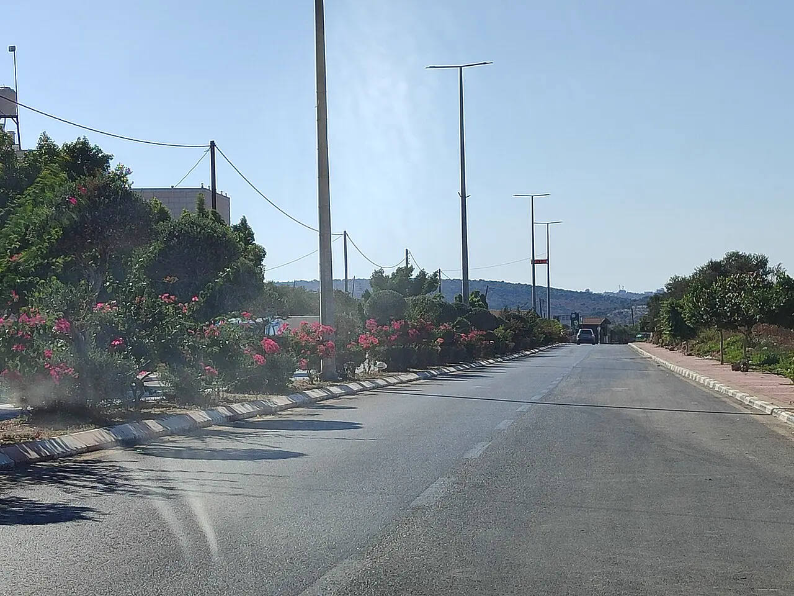
#SELFITİsrail güçleri Selfit’te Esir İşleri Kurumu ofisini bastı, kentin kuzey girişini kapattıKurumun Selfit ofis müdürünün WAFA’ya verdiği bilgiye göre İsrail güçleri, Esir İşleri Kurumu’nun Selfit ofisine girerek eşyaları dağıttı, içerideki fotoğrafları yırttı ve çalışanları sahada sorguladı.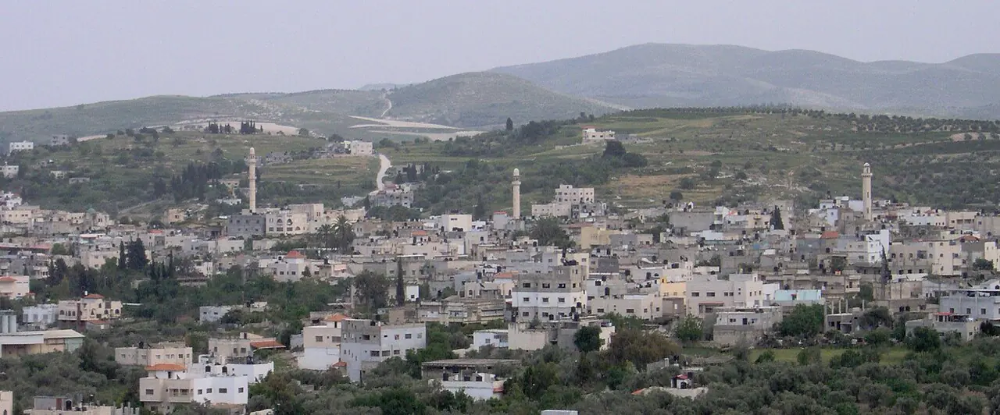
#VAD DAUKİsrail, Cenin’in güneyindeki Vad Dauk köyünün ana girişine demir kapı kurmaya başladıYerel kaynaklara göre İsrail güçleri, Cenin’in güneyindeki Vad Dauk köyünün ana girişine demir kapı kurmaya başladı ve yolu araç trafiğine kapattı; kapı, sakinlerin çevre beldelere, işlerine ve tarım arazilerine ulaşmasını kısıtlıyor. #DAMON HAPISHANESIEsir İşleri Kurumu: Damon Hapishanesi’ndeki iki Filistinli kadın uyuz hastalığıyla boğuşuyorEsir İşleri Kurumu, Damon Hapishanesi’nde tutulan 20 ve 31 yaşlarındaki iki Filistinli kadın esirin uyuz (skabiyez) hastalığına yakalandığını, hijyen malzemesi eksikliği ve koğuşlardaki yüksek nem nedeniyle durumlarının ağırlaştığını açıkladı.
#DAMON HAPISHANESIEsir İşleri Kurumu: Damon Hapishanesi’ndeki iki Filistinli kadın uyuz hastalığıyla boğuşuyorEsir İşleri Kurumu, Damon Hapishanesi’nde tutulan 20 ve 31 yaşlarındaki iki Filistinli kadın esirin uyuz (skabiyez) hastalığına yakalandığını, hijyen malzemesi eksikliği ve koğuşlardaki yüksek nem nedeniyle durumlarının ağırlaştığını açıkladı. #GAZZE ŞERIDITıbbi Yardım Gazze müdürü: Tedavi ve tahliye beklerken 2.027 hasta hayatını kaybettiFilistin Tıbbi Yardım Derneği’nin Gazze müdürü Muhammed Ebu Afeş, Filistin Sesi radyosuna yaptığı açıklamada tedavi ya da yurt dışına tıbbi tahliye beklerken hayatını kaybeden hasta sayısının 2.027’ye ulaştığını söyledi.
#GAZZE ŞERIDITıbbi Yardım Gazze müdürü: Tedavi ve tahliye beklerken 2.027 hasta hayatını kaybettiFilistin Tıbbi Yardım Derneği’nin Gazze müdürü Muhammed Ebu Afeş, Filistin Sesi radyosuna yaptığı açıklamada tedavi ya da yurt dışına tıbbi tahliye beklerken hayatını kaybeden hasta sayısının 2.027’ye ulaştığını söyledi.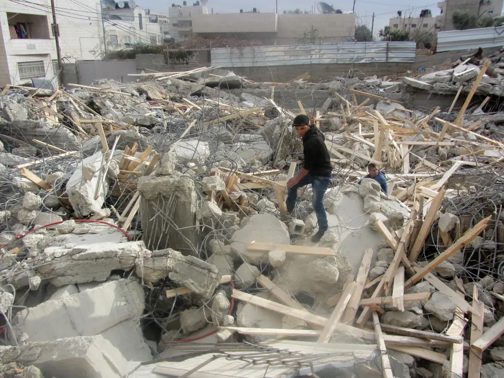
#KUDÜSKudüs’te yıl başından bu yana 430’dan fazla ev ve yapı yıkıldıKudüs işleri araştırmacısı Fahri Ebu Diyab, Filistin Sesi radyosuna yaptığı açıklamada İsrail makamlarının 2026 başından bu yana kentte 430’dan fazla ev ve yapıyı yıktığını söyledi. #ESIRLEREsirler Kulübü: İsrail hapishanelerinde yaklaşık 9.400 Filistinli tutuluyorFilistinli Esirler Kulübü Başkanı Abdullah ez-Zagari, Filistin Sesi radyosuna yaptığı açıklamada İsrail hapishanelerindeki yaklaşık 9.400 Filistinlinin işkence, açlık ve tıbbi ihmalle karşı karşıya olduğunu, aile ziyaretlerinin ve Uluslararası Kızılhaç’ın erişiminin engellendiğini söyledi.
#ESIRLEREsirler Kulübü: İsrail hapishanelerinde yaklaşık 9.400 Filistinli tutuluyorFilistinli Esirler Kulübü Başkanı Abdullah ez-Zagari, Filistin Sesi radyosuna yaptığı açıklamada İsrail hapishanelerindeki yaklaşık 9.400 Filistinlinin işkence, açlık ve tıbbi ihmalle karşı karşıya olduğunu, aile ziyaretlerinin ve Uluslararası Kızılhaç’ın erişiminin engellendiğini söyledi. #KEFR MALIKİsrail iş makineleri Ramallah’ın doğusundaki Kefr Malik’te yüzlerce zeytin ağacını söktüYerel kaynakların WAFA’ya aktardığına göre İsrail iş makineleri sabahın erken saatlerinden itibaren Kefr Malik’in güneyinde, çevre yolu boyunca 35 dönüm tarım arazisini düzleyerek meyve dolu yüzlerce zeytin ağacını kökünden söktü.
#KEFR MALIKİsrail iş makineleri Ramallah’ın doğusundaki Kefr Malik’te yüzlerce zeytin ağacını söktüYerel kaynakların WAFA’ya aktardığına göre İsrail iş makineleri sabahın erken saatlerinden itibaren Kefr Malik’in güneyinde, çevre yolu boyunca 35 dönüm tarım arazisini düzleyerek meyve dolu yüzlerce zeytin ağacını kökünden söktü. #GAZZE ŞERIDIGazze’de can kaybı 74.392’ye çıktı, ateşkesten bu yana 1.501 kişi hayatını kaybettiGazze’deki sağlık kaynaklarının açıkladığı verilere göre 7 Ekim 2023’ten bu yana hayatını kaybedenlerin sayısı 74.392’ye, yaralı sayısı 175.440’a yükseldi.
#GAZZE ŞERIDIGazze’de can kaybı 74.392’ye çıktı, ateşkesten bu yana 1.501 kişi hayatını kaybettiGazze’deki sağlık kaynaklarının açıkladığı verilere göre 7 Ekim 2023’ten bu yana hayatını kaybedenlerin sayısı 74.392’ye, yaralı sayısı 175.440’a yükseldi. #BEYTANablus’un güneyindeki Beyta’da yerleşimciler zeytin toplayan 17 yaşında bir genci darbettiFilistin Kızılayı’na göre yerleşimciler, Nablus’un güneyindeki Beyta beldesinde zeytin toplayan çiftçilere saldırdı; darbedilen 17 yaşındaki bir genç yaralandı.
#BEYTANablus’un güneyindeki Beyta’da yerleşimciler zeytin toplayan 17 yaşında bir genci darbettiFilistin Kızılayı’na göre yerleşimciler, Nablus’un güneyindeki Beyta beldesinde zeytin toplayan çiftçilere saldırdı; darbedilen 17 yaşındaki bir genç yaralandı. #TURMUS AYYAYerleşimciler Turmus Ayya’da zeytin toplayan Filistinlilere saldırdıYerel kaynaklara göre bir grup yerleşimci, Ramallah’ın kuzeyindeki Turmus Ayya’nın kuzeydoğusunda zeytin toplayan Filistinlilere saldırarak hasadı engellemeye çalıştı; belde sakinleri yerleşimcileri ovadaki yerleşim karakoluna doğru geri çekilmeye zorladı.
#TURMUS AYYAYerleşimciler Turmus Ayya’da zeytin toplayan Filistinlilere saldırdıYerel kaynaklara göre bir grup yerleşimci, Ramallah’ın kuzeyindeki Turmus Ayya’nın kuzeydoğusunda zeytin toplayan Filistinlilere saldırarak hasadı engellemeye çalıştı; belde sakinleri yerleşimcileri ovadaki yerleşim karakoluna doğru geri çekilmeye zorladı. #BURINYerleşimciler Nablus’ta Beyt Decen ve Burin’de arazi düzledi, Burin’de yeni karakol hazırlığıYerel ve güvenlik kaynaklarının WAFA’ya aktardığına göre iki iş makinesiyle Nablus’un doğusundaki Beyt Decen ile güneyindeki Burin’e giren yerleşimciler arazi düzleme çalışması başlattı.
#BURINYerleşimciler Nablus’ta Beyt Decen ve Burin’de arazi düzledi, Burin’de yeni karakol hazırlığıYerel ve güvenlik kaynaklarının WAFA’ya aktardığına göre iki iş makinesiyle Nablus’un doğusundaki Beyt Decen ile güneyindeki Burin’e giren yerleşimciler arazi düzleme çalışması başlattı. #MESAFIR YATTAİsrail güçleri Mesafir Yatta’da bir ev ile yedi kişinin yaşadığı bir barınağı yıktıYerel kaynakların WAFA’ya verdiği bilgiye göre İsrail güçleri El Halil’in güneyindeki Mesafir Yatta’da, Yatta’nın güneyindeki İğzeyve mevkiinde 80 metrekarelik bir evi iş makineleriyle yıktı.
#MESAFIR YATTAİsrail güçleri Mesafir Yatta’da bir ev ile yedi kişinin yaşadığı bir barınağı yıktıYerel kaynakların WAFA’ya verdiği bilgiye göre İsrail güçleri El Halil’in güneyindeki Mesafir Yatta’da, Yatta’nın güneyindeki İğzeyve mevkiinde 80 metrekarelik bir evi iş makineleriyle yıktı. #İSAVIYEİsrail güçleri İsaviye’de bir Filistinli çocuğu gözaltına aldıKudüs Valiliğine göre İsrail güçleri sabah saatlerinde Doğu Kudüs’ün kuzeydoğusundaki İsaviye beldesinde bir evi basarak bir çocuğu gözaltına aldı; çocuğun yaşı açıklanmadı.
#İSAVIYEİsrail güçleri İsaviye’de bir Filistinli çocuğu gözaltına aldıKudüs Valiliğine göre İsrail güçleri sabah saatlerinde Doğu Kudüs’ün kuzeydoğusundaki İsaviye beldesinde bir evi basarak bir çocuğu gözaltına aldı; çocuğun yaşı açıklanmadı.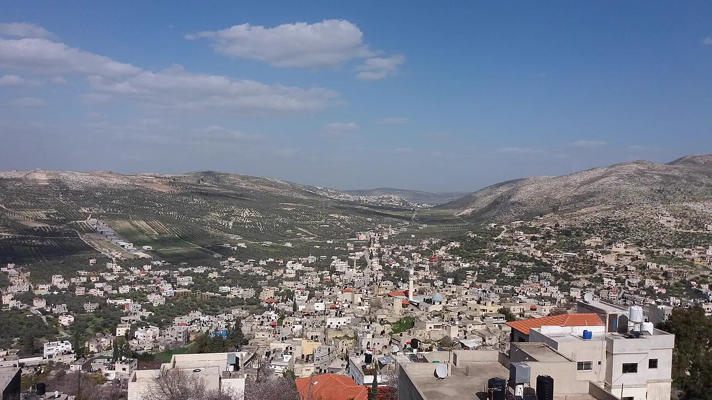
#FENDAKUMIYECenin’de koordinasyona rağmen zeytin bahçelerine giden çiftçilere gaz bombası atıldıYerel kaynaklara göre İsrail güçleri, Cenin’in güneyindeki Fendakumiye, Ceba ve Silet ez-Zahr’dan arazilerine zeytin toplamaya giden çiftçilere gaz bombası atarak onları bölgeden çıkardı.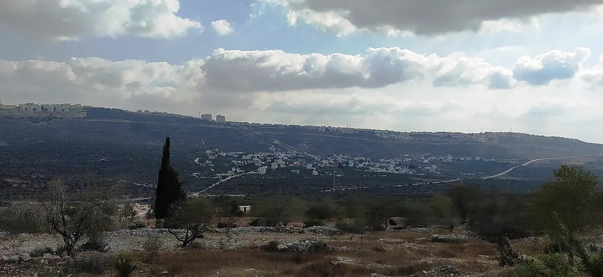
#BATI ŞERIAFilistin İstatistik Bürosu: Batı Şeria’daki yerleşimci sayısı 790 bine ulaştıFilistin Merkezi İstatistik Bürosu ile Çevre Kalitesi Kurumu’nun Arap Çevre Günü dolayısıyla yaptığı ortak açıklamaya göre Temmuz 2026 sonu itibarıyla Batı Şeria’da 170 yerleşim ve 400 karakolda yaklaşık 790 bin yerleşimci yaşıyor; karakolların 231’i çobanlık karakolu. #SAIRİsrail güçleri El Halil’de dördü çocuk sekiz Filistinliyi gözaltına aldıFilistinli Esirler Kulübü’ne göre İsrail güçleri, El Halil’in kuzeydoğusundaki Sair beldesinden 14 ve 15 yaşlarındaki dört çocuk ile bir genci, Dura’nın güneybatısındaki el-Burc köyünden iki kişiyi ve batıdaki Beyt Ula’dan 62 yaşındaki bir adamı gözaltına aldı; gözaltına alınanların darbedildiği bildirildi.
#SAIRİsrail güçleri El Halil’de dördü çocuk sekiz Filistinliyi gözaltına aldıFilistinli Esirler Kulübü’ne göre İsrail güçleri, El Halil’in kuzeydoğusundaki Sair beldesinden 14 ve 15 yaşlarındaki dört çocuk ile bir genci, Dura’nın güneybatısındaki el-Burc köyünden iki kişiyi ve batıdaki Beyt Ula’dan 62 yaşındaki bir adamı gözaltına aldı; gözaltına alınanların darbedildiği bildirildi. #MUHMASYerleşimciler Kudüs’ün kuzeydoğusundaki Muhmas’ta bir camiyi ateşe verdiKudüs Valiliğinin açıklamasına göre İsrailli yerleşimciler gece yarısından sonra Muhmas köyüne girerek bir camiyi, caminin yanındaki zeytin ağacını ve bir aracı ateşe verdi; araç tamamen yandı.
#MUHMASYerleşimciler Kudüs’ün kuzeydoğusundaki Muhmas’ta bir camiyi ateşe verdiKudüs Valiliğinin açıklamasına göre İsrailli yerleşimciler gece yarısından sonra Muhmas köyüne girerek bir camiyi, caminin yanındaki zeytin ağacını ve bir aracı ateşe verdi; araç tamamen yandı. #RIMAL MAHALLESIİsrail uçakları Gazze kentinin batısında bir daireyi vurdu: Bir kadın hayatını kaybettiYerel kaynaklara göre İsrail uçakları, Gazze kentinin batısındaki Rimal Mahallesi’nde Ebu Talal Kavşağı yakınındaki bir konut dairesini hedef aldı; saldırıda bir kadın hayatını kaybetti, çok sayıda kişi yaralandı.
#RIMAL MAHALLESIİsrail uçakları Gazze kentinin batısında bir daireyi vurdu: Bir kadın hayatını kaybettiYerel kaynaklara göre İsrail uçakları, Gazze kentinin batısındaki Rimal Mahallesi’nde Ebu Talal Kavşağı yakınındaki bir konut dairesini hedef aldı; saldırıda bir kadın hayatını kaybetti, çok sayıda kişi yaralandı.
13 Ekim 2026 Salı
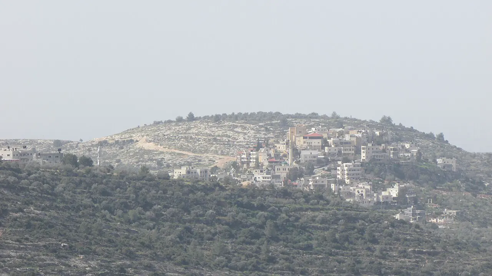
#RAS KERKERRas Kerker’de demir kapıdan geçmeye çalışan iki Filistinli plastik mermiyle başından yaralandıYerel kaynaklara göre İsrail güçleri, Ramallah’ın batısındaki Ras Kerker köyünü komşu Hirbeta Beni Haris’ten ayıran demir kapıdan geçmeye çalışan iki Filistinliye plastik mermiyle ateş açtı; başlarından yaralanan iki kişi tedavi için Ramallah’a götürüldü.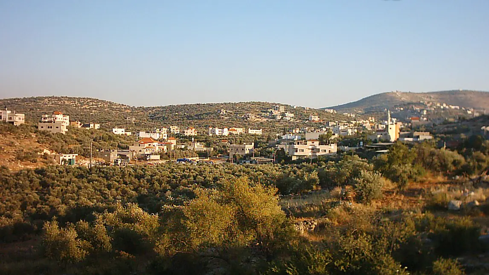
#EL-YAMUNCenin’in batısındaki el-Yamun’da İsrail askeri aracının çarptığı üç Filistinli yaralandıFilistin Kızılayı, İsrail güçlerinin akşam saatlerinde düzenlediği baskın sırasında el-Yamun beldesinde bir askeri aracın çarptığı üç kişinin Cenin Devlet Hastanesi’ne kaldırıldığını, yaralılardan birinin ayaklarında kırık olduğunu açıkladı. #KAHIREArap Birliği, Filistin halkı için acil uluslararası koruma çağrısı yaptıArap Birliği Konseyi, Filistin’in talebiyle daimi temsilciler düzeyinde Kahire’de toplanan olağanüstü oturumun sonunda Dördüncü Cenevre Sözleşmesi’ne taraf devletleri Filistin halkını İsrail saldırılarına ve yerleşimci terörüne karşı korumak için derhal harekete geçmeye çağırdı.
#KAHIREArap Birliği, Filistin halkı için acil uluslararası koruma çağrısı yaptıArap Birliği Konseyi, Filistin’in talebiyle daimi temsilciler düzeyinde Kahire’de toplanan olağanüstü oturumun sonunda Dördüncü Cenevre Sözleşmesi’ne taraf devletleri Filistin halkını İsrail saldırılarına ve yerleşimci terörüne karşı korumak için derhal harekete geçmeye çağırdı. #RAMALLAHİsrail güçleri Ramallah’ta Filistin Tıp Kompleksi’nin avlusuna girdi, Addameer’in binasını bastıİsrail güçleri sabah saatlerinde Ramallah kent merkezine düzenlediği geniş çaplı baskında Filistin Tıp Kompleksi’nin avlusuna girerek kapıların çevresine keskin nişancı yerleştirdi ve kompleksten giriş çıkışı engelledi.
#RAMALLAHİsrail güçleri Ramallah’ta Filistin Tıp Kompleksi’nin avlusuna girdi, Addameer’in binasını bastıİsrail güçleri sabah saatlerinde Ramallah kent merkezine düzenlediği geniş çaplı baskında Filistin Tıp Kompleksi’nin avlusuna girerek kapıların çevresine keskin nişancı yerleştirdi ve kompleksten giriş çıkışı engelledi. #MEVASIHan Yunus’ta yerinden edilmiş aileler kışa karşı çadırlarını enkazdan çıkan demirle yeniden kuruyorWAFA muhabirinin haberine göre Han Yunus’un batısındaki Mevasi bölgesinde yaşayan yerinden edilmiş aileler, kış öncesinde çadırlarını rüzgâr ve yağmura dayanıklı hale getirmek için yıkılan evlerin enkazından çıkarılan demir çubuklarla yeniden kuruyor.
#MEVASIHan Yunus’ta yerinden edilmiş aileler kışa karşı çadırlarını enkazdan çıkan demirle yeniden kuruyorWAFA muhabirinin haberine göre Han Yunus’un batısındaki Mevasi bölgesinde yaşayan yerinden edilmiş aileler, kış öncesinde çadırlarını rüzgâr ve yağmura dayanıklı hale getirmek için yıkılan evlerin enkazından çıkarılan demir çubuklarla yeniden kuruyor.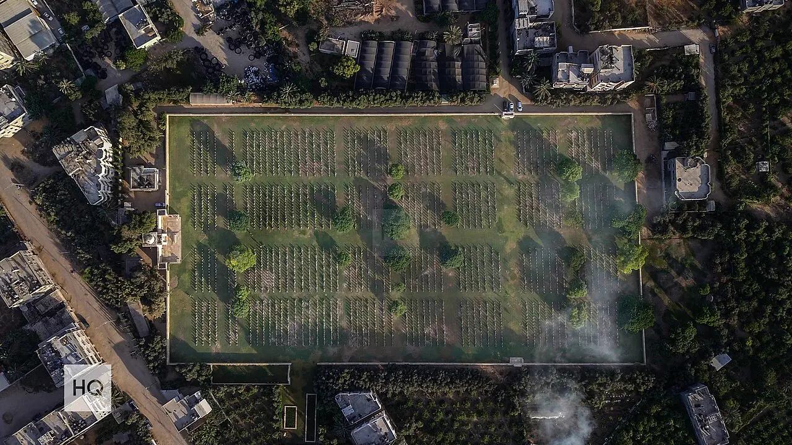
#TUFFAH MAHALLESIGazze kentinin Tuffah Mahallesi’nde sivil bir araca hava saldırısı: 1 ölüSağlık kaynaklarına göre İsrail’e ait bir insansız hava aracı, Gazze kentinin kuzeydoğusundaki Tuffah Mahallesi’nde Muşahara Caddesi’nde sivil bir aracı hedef aldı; saldırıda kimliği henüz belirlenemeyen bir kişi hayatını kaybetti, çok sayıda kişi yaralandı. #SILVANİsrail, Silvan’da bir baba ile oğluna ait 2 evi yıktıKudüs Valiliğine göre iş makineleriyle Silvan beldesinin Vadi Kaddum Mahallesi’ne giren İsrail güçleri, bir baba ile oğluna ait iki evi yıktı.
#SILVANİsrail, Silvan’da bir baba ile oğluna ait 2 evi yıktıKudüs Valiliğine göre iş makineleriyle Silvan beldesinin Vadi Kaddum Mahallesi’ne giren İsrail güçleri, bir baba ile oğluna ait iki evi yıktı. #MESCID-I AKSAKudüs Valiliği: 133 İsrailli polis korumasında Mescid-i Aksa’ya girdiKudüs Valiliğinin açıklamasına göre 133 kişilik grup, salı sabahı İsrail polisinin koruması altında Mağribiler Kapısı’ndan Mescid-i Aksa avlusuna girerek Talmudik ritüeller gerçekleştirdi ve kışkırtıcı turlar attı; bu sırada Müslüman cemaatin girişine kısıtlama uygulandı.
#MESCID-I AKSAKudüs Valiliği: 133 İsrailli polis korumasında Mescid-i Aksa’ya girdiKudüs Valiliğinin açıklamasına göre 133 kişilik grup, salı sabahı İsrail polisinin koruması altında Mağribiler Kapısı’ndan Mescid-i Aksa avlusuna girerek Talmudik ritüeller gerçekleştirdi ve kışkırtıcı turlar attı; bu sırada Müslüman cemaatin girişine kısıtlama uygulandı.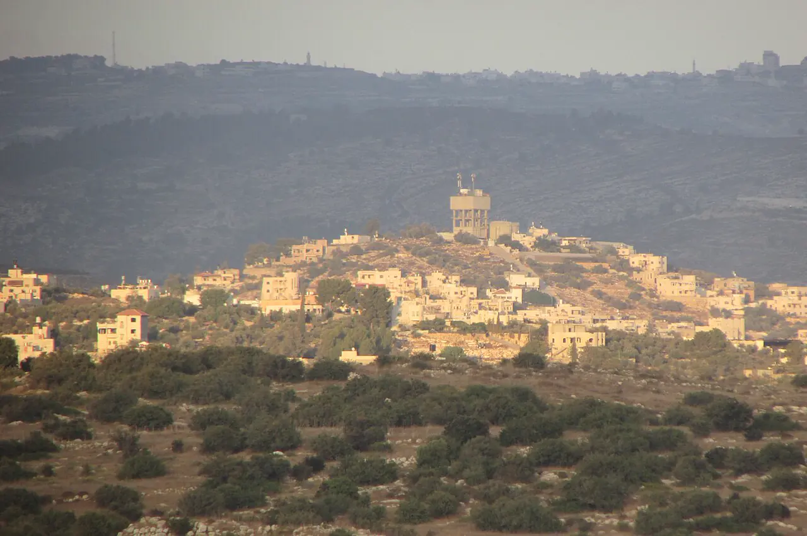
#İZNAİsrail güçleri El Halil’in batısındaki İzna’da zeytin hasadını izleyen dört gazeteciyi alıkoyduYerel kaynaklara göre İsrail güçleri, El Halil’in batısındaki İzna beldesinde yerleşimcilerin zeytin toplayanlara saldırılarını takip eden dört gazeteciyi, bölgenin ‘kapalı askeri bölge’ olduğu gerekçesiyle alıkoyarak haber yapmalarını engelledi. #BEYT LIDTulkerem’in doğusundaki Beyt Lid’de yerleşimciler zeytin toplayan iki kadını sopayla yaraladıFilistin Kızılayı’nın Tulkerem ekipleri, Beyt Lid beldesinde zeytin toplarken sopalı ve silahlı yerleşimcilerin saldırısına uğrayan, biri yaşlı iki kadını karın ve baş bölgelerinden yaralı olarak hastaneye kaldırdı; kadınların durumunun orta derecede olduğu bildirildi.
#BEYT LIDTulkerem’in doğusundaki Beyt Lid’de yerleşimciler zeytin toplayan iki kadını sopayla yaraladıFilistin Kızılayı’nın Tulkerem ekipleri, Beyt Lid beldesinde zeytin toplarken sopalı ve silahlı yerleşimcilerin saldırısına uğrayan, biri yaşlı iki kadını karın ve baş bölgelerinden yaralı olarak hastaneye kaldırdı; kadınların durumunun orta derecede olduğu bildirildi.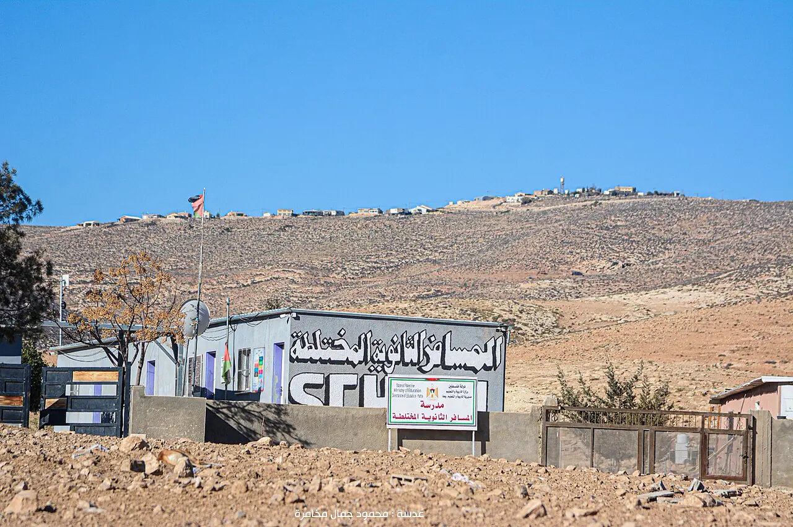
#MESAFIR YATTAMesafir Yatta’da yerleşimciler okul servisinin camlarını kırdı, zeytin hasadını çaldıYerel kaynaklara göre yerleşimciler El Halil’in güneyindeki Mesafir Yatta’nın Kavavis bölgesinde arazilerdeki ekinleri ve çitleri tahrip etti, zeytin toplayan bir aileye saldırarak ürünü çaldı. #GAZIANTEPGaziantep ile Gazze arasında kardeş şehir protokolü imzalandıFilistin’in Ankara Büyükelçisi Nasri Ebu Ceyş ile Gaziantep Büyükşehir Belediye Başkanı Fatma Şahin, TBMM Başkanı Numan Kurtulmuş’un da katıldığı törenle Gaziantep ve Gazze belediyeleri arasında kardeş şehir protokolü imzaladı.
#GAZIANTEPGaziantep ile Gazze arasında kardeş şehir protokolü imzalandıFilistin’in Ankara Büyükelçisi Nasri Ebu Ceyş ile Gaziantep Büyükşehir Belediye Başkanı Fatma Şahin, TBMM Başkanı Numan Kurtulmuş’un da katıldığı törenle Gaziantep ve Gazze belediyeleri arasında kardeş şehir protokolü imzaladı.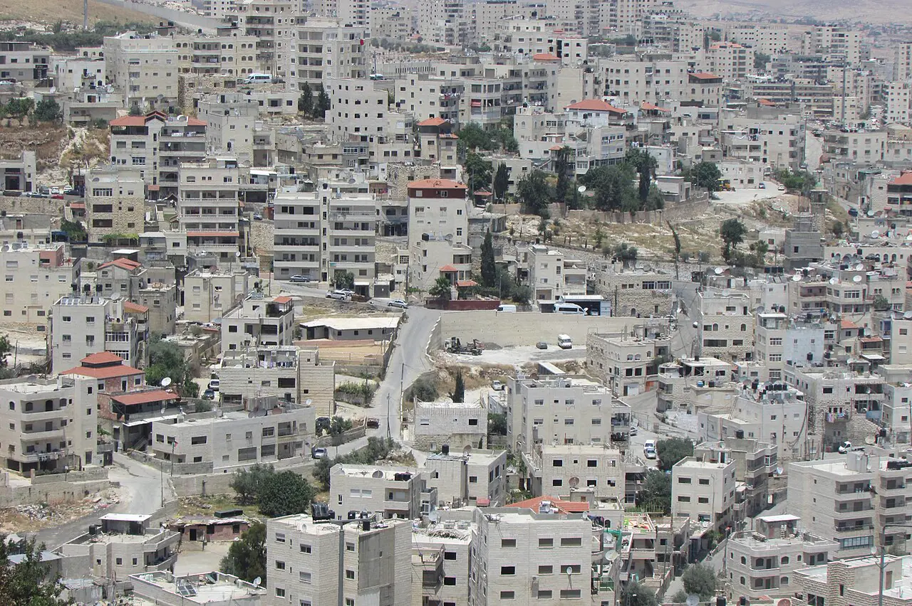
#İSAVIYEİsrail mahkemesi İsaviyeli 15 yaşındaki çocuğa 6 ay hapis cezası verdiDoğu Kudüs’ün İsaviye beldesinden 15 yaşındaki bir çocuğa İsrail mahkemesince 6 ay fiili hapis cezası verildi.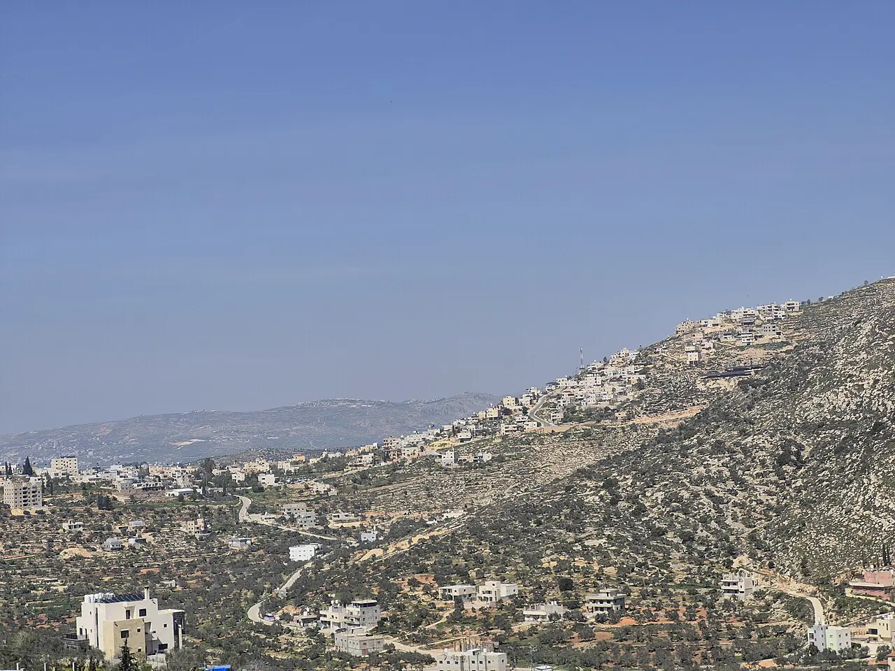
#TELFITNablus’un güneyindeki Telfit’te asker kılığına giren yerleşimciler bir aileye saldırdıYerel kaynaklara göre İsrail ordusu üniforması giyen yerleşimciler şafak vakti Nablus’un güneyindeki Telfit köyünde bir evin kapısını çalarak ev sahibini ve aile üyelerini darbetti; yaralanan aile üyeleri hastaneye kaldırıldı.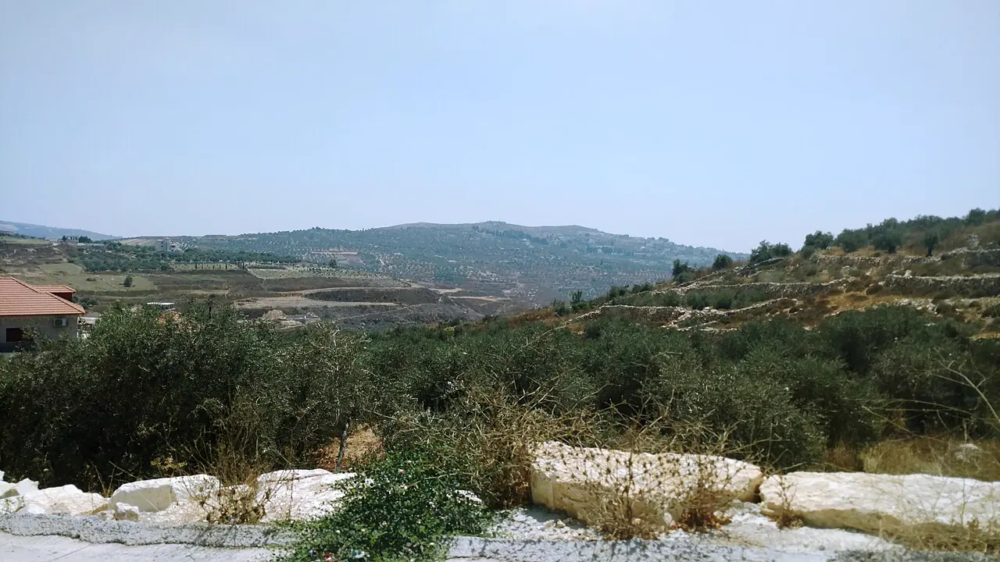
#TELLİsrail güçleri Nablus köylerine düzenlediği baskınlarda 28 Filistinliyi gözaltına aldıGüvenlik kaynaklarının WAFA’ya verdiği bilgiye göre İsrail güçleri şafak vakti Nablus’un güneybatısındaki Tell köyünden 15, kuzeydeki Asire eş-Şemaliye beldesinden 12 ve güneydeki bir köyden 1 kişiyi gözaltına aldı.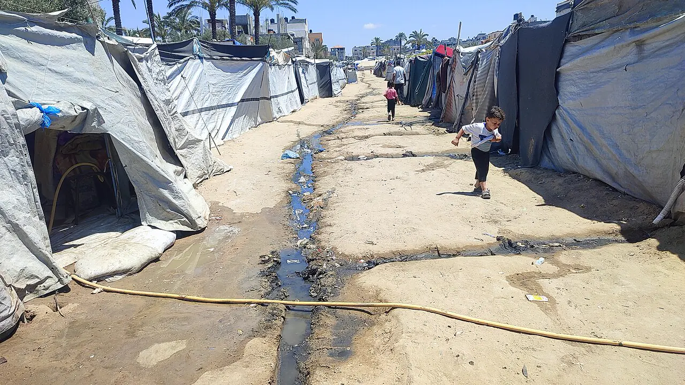
#ZEVAYDEGazze’nin Zevayde beldesinde üç hafta önce yaralanan 4 yaşındaki çocuk hayatını kaybettiSağlık kaynaklarına göre Gazze Şeridi’nin orta kesimindeki Zevayde beldesine yaklaşık üç hafta önce düzenlenen İsrail saldırısında yaralanan 4 yaşındaki bir çocuk hayatını kaybetti.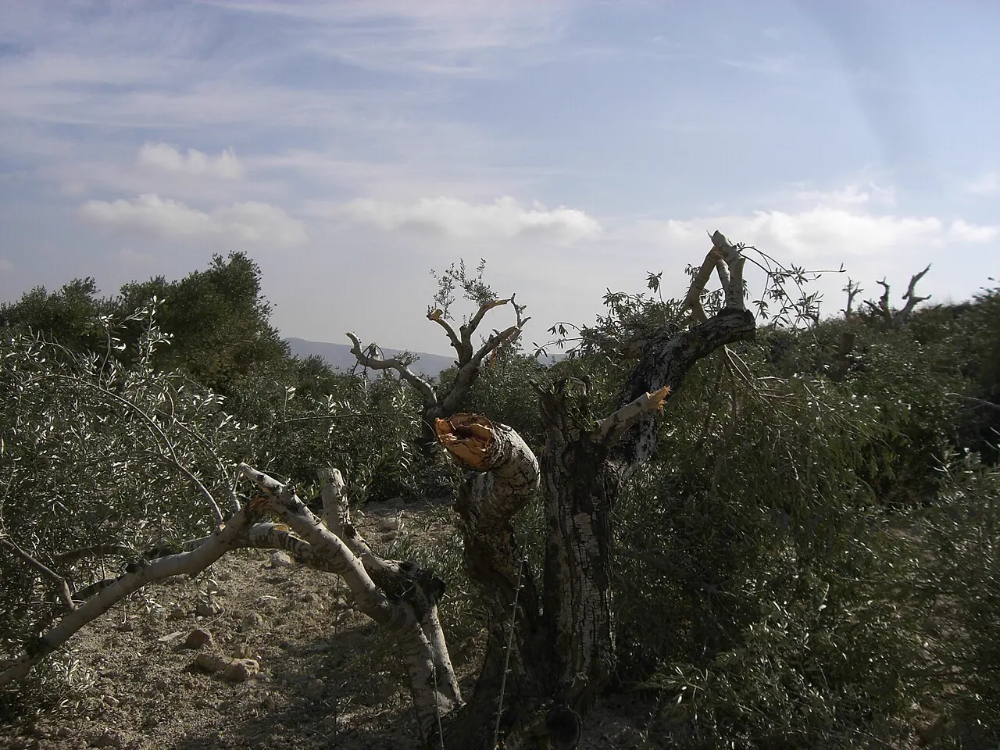
#BATI ŞERIAKomisyon: 13 Ekim’de yedi ilde çiftçilere ve arazilere yönelik 25 saldırı kaydedildiDuvar ve Yerleşim Karşıtı Komisyon’un izleme verilerine göre 13 Ekim’de 06.00 ile 18.00 arasında yerleşimciler ve İsrail güçleri, Doğu Kudüs dahil Batı Şeria’nın yedi ilinde çiftçilere ve arazilere yönelik 25 saldırı ve ihlal gerçekleştirdi.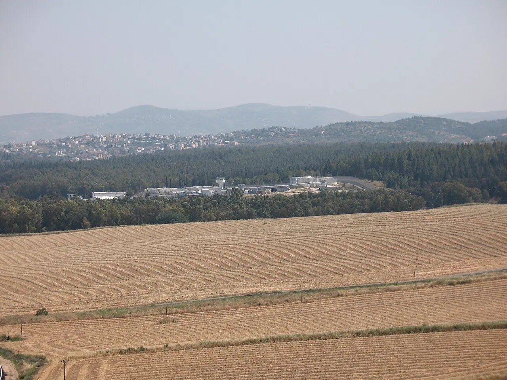
#ESIRLEREsirler Kulübü: Takasla serbest kalan yaklaşık 80 esir yeniden gözaltına alındı veya sorgulandıFilistinli Esirler Kulübü, 13 Ekim 2025’teki esir takasının birinci yılında, takaslarla serbest kalanlardan yaklaşık 80’inin yeniden gözaltına alındığını ya da sorguya çağrıldığını açıkladı.
12 Ekim 2026 Pazartesi
 #KALKILYAİsrail güçleri Kalkilya’da bir çocuğu mermiyle yaralayıp gözaltına aldıYerel kaynakların WAFA’ya verdiği bilgiye göre güney girişinden Kalkilya’ya giren İsrail güçleri ses bombası ve mermi kullandı; vurulan bir çocuk yaralandıktan sonra gözaltına alındı.
#KALKILYAİsrail güçleri Kalkilya’da bir çocuğu mermiyle yaralayıp gözaltına aldıYerel kaynakların WAFA’ya verdiği bilgiye göre güney girişinden Kalkilya’ya giren İsrail güçleri ses bombası ve mermi kullandı; vurulan bir çocuk yaralandıktan sonra gözaltına alındı.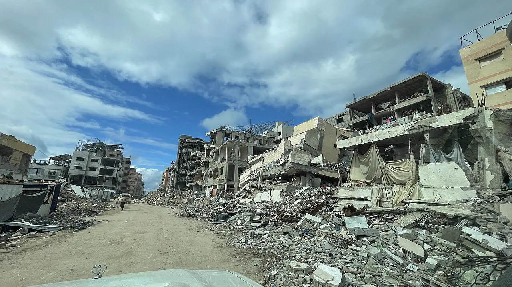
#GAZZE ŞERIDIBM İnsan Hakları Ofisi: Gazze’de ateşkesten temmuz sonuna kadar 1.076 ölüm doğrulandıBM İnsan Hakları Yüksek Komiserliği’nin işgal altındaki Filistin topraklarındaki ofisi, ateşkesin ilan edildiği Ekim 2025’ten Temmuz 2026 sonuna kadar Gazze’de 1.076 Filistinlinin öldürüldüğünü doğruladı; bunların 268’i çocuk, 126’sı kadın, 682’si erkek. #BATI ŞERIAKomisyon: Ekim’in ilk 12 gününde 219 saldırı kaydedildi, 136’sı zeytin hasadıyla bağlantılıDuvar ve Yerleşim Karşıtı Komisyon’un sahadan gelen bildirimlere dayanan ön sayımına göre 1-12 Ekim arasında yerleşimciler ve İsrail ordusu 219 saldırı gerçekleştirdi; bunların 177’sini yerleşimciler yaptı, 42’sinde ordu ve yerleşimciler birlikte yer aldı.
#BATI ŞERIAKomisyon: Ekim’in ilk 12 gününde 219 saldırı kaydedildi, 136’sı zeytin hasadıyla bağlantılıDuvar ve Yerleşim Karşıtı Komisyon’un sahadan gelen bildirimlere dayanan ön sayımına göre 1-12 Ekim arasında yerleşimciler ve İsrail ordusu 219 saldırı gerçekleştirdi; bunların 177’sini yerleşimciler yaptı, 42’sinde ordu ve yerleşimciler birlikte yer aldı. #TUBAS OVASIYerleşimciler Tubas Ovası’nda çardak kurup İsrail bayrağı astı, İsrail güçleri demir kapı diktiYerel kaynaklara göre İsrail ordusunun koruması altındaki yerleşimciler, Tubas Ovası’ndaki Aynun mevkiinde çardaklar kurarak İsrail bayrakları astı; bölge halkı bunun yeni bir yerleşim karakolunun çekirdeği olmasından endişe ediyor.
#TUBAS OVASIYerleşimciler Tubas Ovası’nda çardak kurup İsrail bayrağı astı, İsrail güçleri demir kapı diktiYerel kaynaklara göre İsrail ordusunun koruması altındaki yerleşimciler, Tubas Ovası’ndaki Aynun mevkiinde çardaklar kurarak İsrail bayrakları astı; bölge halkı bunun yeni bir yerleşim karakolunun çekirdeği olmasından endişe ediyor.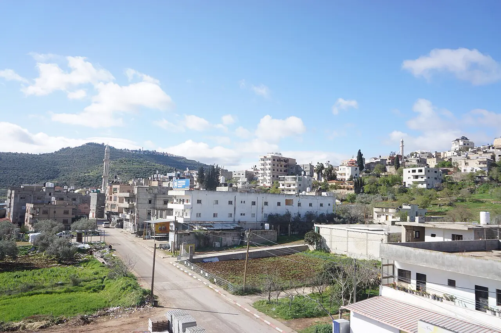
#LUBBAN EŞ-ŞARKIYEİsrail iş makineleri Lubban eş-Şarkiye’de 200’den fazla asırlık zeytin ağacını söktüWAFA muhabirine göre İsrail iş makineleri, Nablus’un güneyindeki Lubban eş-Şarkiye köyünün doğusundaki Sur mevkiinde, sahipleri hasat yapamadan meyve dolu 200’den fazla asırlık zeytin ağacını kökünden söktü. #BEYT ULAİsrail güçlerinin kovaladığı araçta hayatını kaybeden Filistinli Beyt Ula’da toprağa verildiEl Halil’in batısındaki Beyt Ula beldesinde, cenazesi İsrail tarafından cuma gününden pazar gününe kadar alıkonulan 32 yaşındaki bir Filistinli toprağa verildi.
#BEYT ULAİsrail güçlerinin kovaladığı araçta hayatını kaybeden Filistinli Beyt Ula’da toprağa verildiEl Halil’in batısındaki Beyt Ula beldesinde, cenazesi İsrail tarafından cuma gününden pazar gününe kadar alıkonulan 32 yaşındaki bir Filistinli toprağa verildi. #MEVASIRefah’ın Mevasi bölgesinde İsrail İHA saldırısı: 2 ölüNasır Tıp Kompleksi kaynaklarına göre İsrail’e ait bir insansız hava aracı, Refah’ın Mevasi bölgesinde bir grup Filistinliyi hedef aldı; saldırıda iki kişi hayatını kaybetti, çok sayıda kişi yaralandı.
#MEVASIRefah’ın Mevasi bölgesinde İsrail İHA saldırısı: 2 ölüNasır Tıp Kompleksi kaynaklarına göre İsrail’e ait bir insansız hava aracı, Refah’ın Mevasi bölgesinde bir grup Filistinliyi hedef aldı; saldırıda iki kişi hayatını kaybetti, çok sayıda kişi yaralandı.